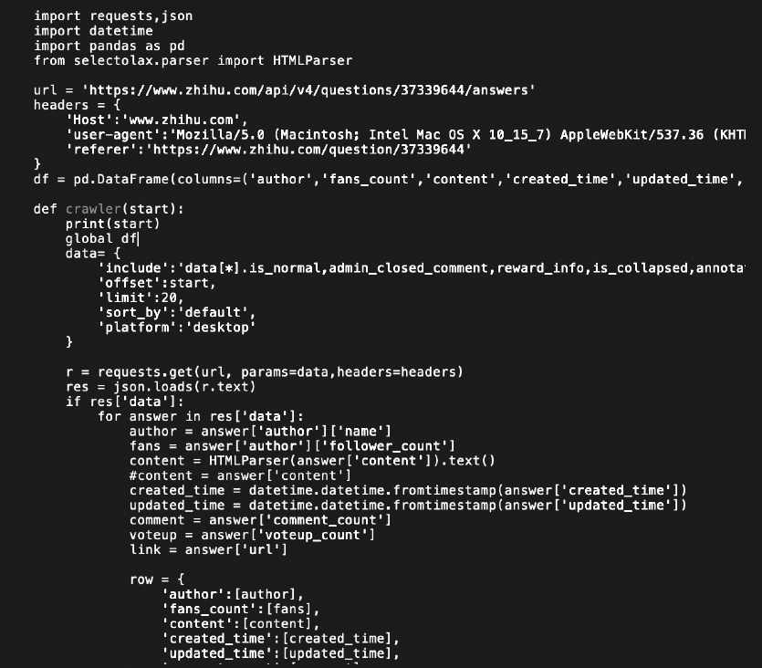

Male gaze is a topic that is discussed a lot in the West, but in China, not many people recognize or even
understand it. Some don't even believe it exists, or acknowledge the problems caused by male gaze
I designed a male gaze project, using motion capture and tracking technology, and I collected a lot of video information and mapped them to the information identified by motion capture. To restore the feeling of women being stared at in real life as much as possible.
2020 Global Gender Gap
Major barriers to economic and political advamcement
Compared with the rapid development in ecnomics, the gender gap in China improve slowly. In China, there are almost 700 billion women still facing major barriers to economic and political advancement.

Six major areas need improve

A Deeper Research
Visualization on inequality complaint post: python for data collection and d3.js for
visual
Data Source: The discussion on Gender Inequaliy, the patriarchy phenomenon in China

This is the result collected from the above questions, including the content of the questions, the created time, the vote-up count. 10263 complaints concerning this issue.

python code for data mining

We can see this is a constant problem from 2015. Women keep posting comments trying to raise awareness
towards gender issue.
This is a visualization of 10263 data using d3.js. y-xias is the total
vote-up(agree)counts for one specific post

Interview I: with lady from Zhihu platform

Interview II: with lady from different ages

Experiment: Do gaze exist
PoseNet and D3.js
Since all my interviewees mentioned the existence of staring, I wanted to design an experiment to observe whether staring is real and in what form. So I designed this experiment, which can accurately record the movement of
I invited a friend to wear different size of cloth then I track the eye movement with poseNet and console.log the x and y position. I export the data in json formate and visualize the result with d3.js

Conclusion: people do gaze differently no matter male or female.
Idea I
Using p5.js, OOP programing, and poseNet

User test #1
I invite girls to join one by one and share their feelings

Iteration
Filming with real person's eye

Production Process
A collection of 24 eye sights recording

A collection of 24 eye sights recording

Setup & Real-world test


Code display: p5.js and PoseNet

Future Design
make this a VR project where users can feel the gaze from human